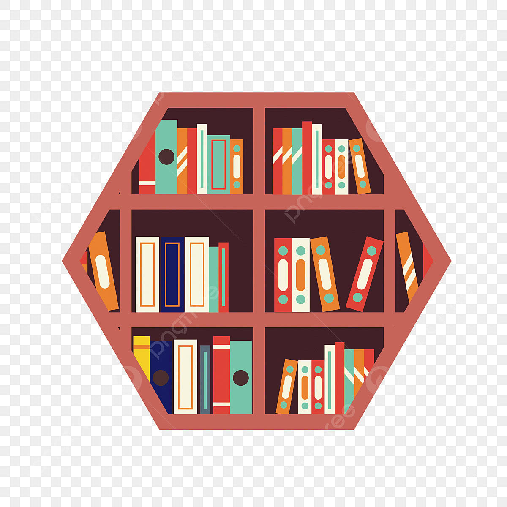
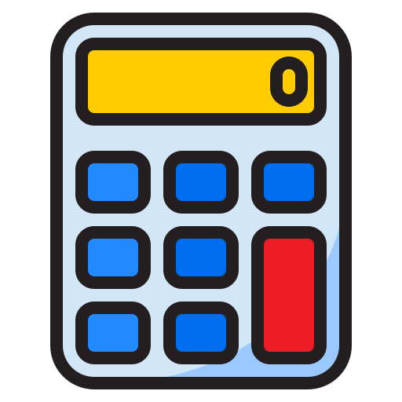

My Projects
Below are some of the projects I've built while studying Computer Science at Georgia State University. Each one has helped me sharpen a different set of skills, from backend logic to full application design.
Featured Work
Library Management System

A library management system built to help organize book inventory and streamline the checkout and return process. This project let me practice structuring a real-world application from the ground up.
Built with Java, MySQL, and JDBC in Visual Studio Code.
View on GitHub
Dice Rolling Simulator
A simple program that simulates rolling one or more dice, generating random results each time it runs. It was a fun way to practice working with randomness and user input.
Built with Python in Visual Studio Code.
View Project
Calculator

A calculator application that handles basic arithmetic operations through a simple interface. This project helped me practice core programming logic and input handling.
Built with Python in Visual Studio Code.
View Project
Connect With Me
Interested in working together or just want to talk basketball and video games? Reach out below.